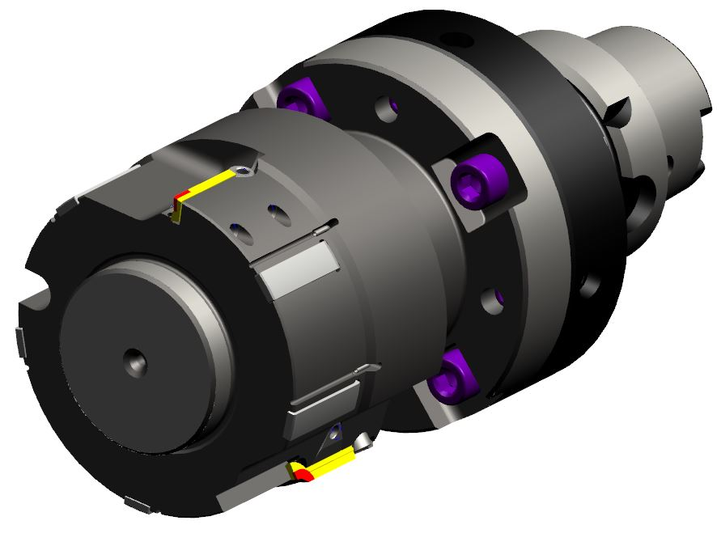

可调式铰刀通常用于加工IT6-IT7级高精度孔，并保证极高的形位公差及孔壁光洁度，可做成单刃或者多刃形式，配以导条支撑。调节可以是轴向，径向和背锥三个维度。后端辅以法兰接口以消除机床跳动。刃口可以是CBN，PCD或者硬质合金。
|  |
图号: CN-21047 型号: FB-90-C30C45-ADI100-21047 刀片: CR-11702/CR-11703 设计者: DX |
|
图号: CN-21045 型号: FB-64-80-82.5-118-M100 刀片: CR-11693/CR-11694/CCGT09T308F-AL 设计者: DX |
|
图号: 03135761 型号: FB-9.66-43.8C90-ADI100-SP 刀片: 03135763 前端铰刀: 03135765 设计者: DX |